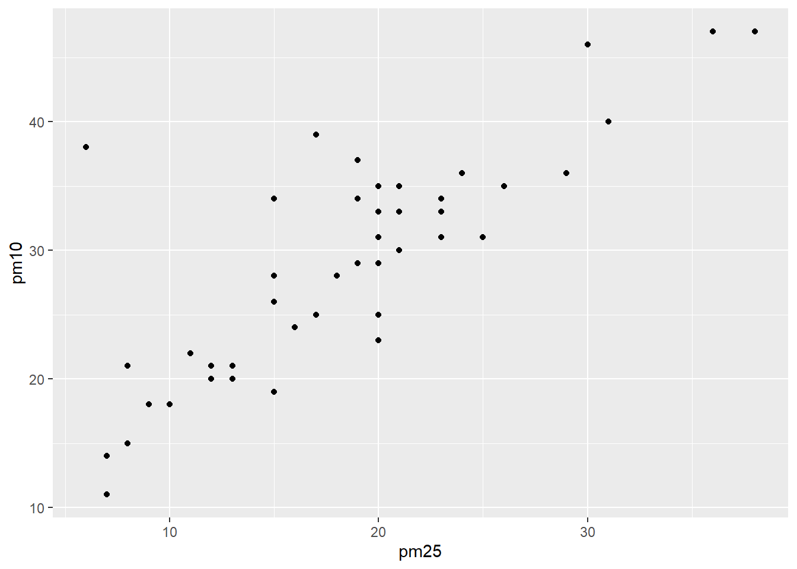
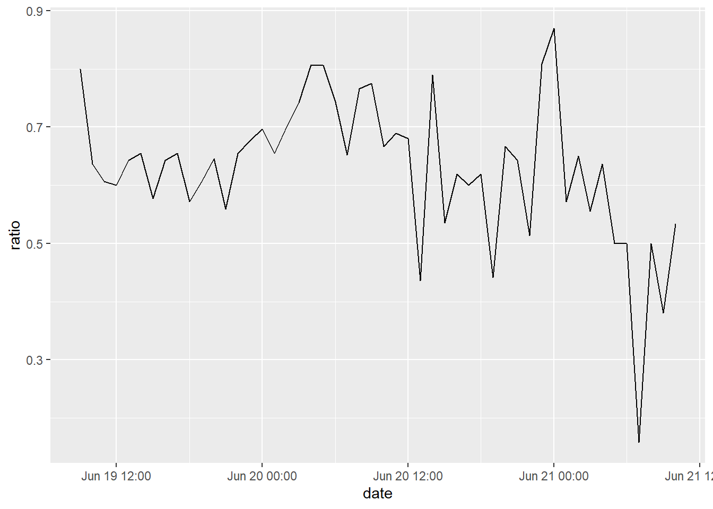

library(tidyverse)
# install.packages("lubridate")
library(lubridate)
library(nycflights13)
library(openair)today()## [1] "2022-08-18"now()## [1] "2022-08-18 00:05:33 CST"ymd("2022-01-31")## [1] "2022-01-31"mdy("January 31st, 2022")## [1] "2022-01-31"dmy("31-Jan-2022")## [1] "2022-01-31"ymd_hms("2022-01-31 20:11:59")## [1] "2022-01-31 20:11:59 UTC"glimpse(flights)## Rows: 336,776
## Columns: 19
## $ year <int> 2013, 2013, 2013, 2013, 2013, 2013, 2013, 2013, 2013, 2…
## $ month <int> 1, 1, 1, 1, 1, 1, 1, 1, 1, 1, 1, 1, 1, 1, 1, 1, 1, 1, 1…
## $ day <int> 1, 1, 1, 1, 1, 1, 1, 1, 1, 1, 1, 1, 1, 1, 1, 1, 1, 1, 1…
## $ dep_time <int> 517, 533, 542, 544, 554, 554, 555, 557, 557, 558, 558, …
## $ sched_dep_time <int> 515, 529, 540, 545, 600, 558, 600, 600, 600, 600, 600, …
## $ dep_delay <dbl> 2, 4, 2, -1, -6, -4, -5, -3, -3, -2, -2, -2, -2, -2, -1…
## $ arr_time <int> 830, 850, 923, 1004, 812, 740, 913, 709, 838, 753, 849,…
## $ sched_arr_time <int> 819, 830, 850, 1022, 837, 728, 854, 723, 846, 745, 851,…
## $ arr_delay <dbl> 11, 20, 33, -18, -25, 12, 19, -14, -8, 8, -2, -3, 7, -1…
## $ carrier <chr> "UA", "UA", "AA", "B6", "DL", "UA", "B6", "EV", "B6", "…
## $ flight <int> 1545, 1714, 1141, 725, 461, 1696, 507, 5708, 79, 301, 4…
## $ tailnum <chr> "N14228", "N24211", "N619AA", "N804JB", "N668DN", "N394…
## $ origin <chr> "EWR", "LGA", "JFK", "JFK", "LGA", "EWR", "EWR", "LGA",…
## $ dest <chr> "IAH", "IAH", "MIA", "BQN", "ATL", "ORD", "FLL", "IAD",…
## $ air_time <dbl> 227, 227, 160, 183, 116, 150, 158, 53, 140, 138, 149, 1…
## $ distance <dbl> 1400, 1416, 1089, 1576, 762, 719, 1065, 229, 944, 733, …
## $ hour <dbl> 5, 5, 5, 5, 6, 5, 6, 6, 6, 6, 6, 6, 6, 6, 6, 5, 6, 6, 6…
## $ minute <dbl> 15, 29, 40, 45, 0, 58, 0, 0, 0, 0, 0, 0, 0, 0, 0, 59, 0…
## $ time_hour <dttm> 2013-01-01 05:00:00, 2013-01-01 05:00:00, 2013-01-01 0…new_flights <- flights %>%
select(year, month, day, hour, minute)
new_flights_date <- new_flights %>%
mutate(departure = make_datetime(year, month, day, hour, minute))as_datetime(now())## [1] "2022-08-17 16:05:36 UTC"as_date(now())## [1] "2022-08-18"d1 <- mdy("January 1, 2010")
d2 <- ymd("2015-Mar-07")
d3 <- dmy("06-Jun-2017")
d4 <- mdy(c("August 19 (2015)", "July 1 (2015)"))
d5 <- mdy("12/30/14") ymd(c("2010-10-10", "bananas"))## Warning: 1 failed to parse.## [1] "2010-10-10" NAdatetime <- ymd_hms("2022/Jul/08 12:34:56")
year(datetime)## [1] 2022month(datetime)## [1] 7mday(datetime)## [1] 8yday(datetime)## [1] 189wday(datetime)## [1] 6month(datetime, label = TRUE, abbr = FALSE)## [1] July
## 12 Levels: January < February < March < April < May < June < ... < Decemberwday(datetime)## [1] 6hour(datetime)## [1] 12minute(datetime)## [1] 34second(datetime)## [1] 56datetime <- "2022-Jul-08 12:34:56"
datetime <- ymd_hms(datetime)
ceiling_date(datetime, "min")## [1] "2022-07-08 12:35:00 UTC"floor_date(datetime, "hour")## [1] "2022-07-08 12:00:00 UTC"round_date(datetime, "month")## [1] "2022-07-01 UTC"(datetime <- ymd_hms("2020-Jul-08 12:34:56"))## [1] "2020-07-08 12:34:56 UTC"year(datetime) <- 2022
datetime## [1] "2022-07-08 12:34:56 UTC"month(datetime) <- 08
datetime## [1] "2022-08-08 12:34:56 UTC"hour(datetime) <- hour(datetime) + 2
datetime## [1] "2022-08-08 14:34:56 UTC"update()(datetime <- ymd_hms("2020-Jul-08 12:34:56"))## [1] "2020-07-08 12:34:56 UTC"update(datetime, year = 2022, month = 08, mday = 12, hour = 21)## [1] "2022-08-12 21:34:56 UTC"# install.packages("openair")
library(openair)
our_new_dataset <- openair::mydata %>%
head(50)our_new_mutated_dataset <- our_new_dataset %>%
mutate(year_new_column = year(date),
month_new_column = month(date),
day_new_column = mday(date))
year(our_new_mutated_dataset$date) <- 2022my_age <- today() - ymd("1995-03-27")
my_age## Time difference of 10006 daysas.duration(my_age)## [1] "864518400s (~27.39 years)"dseconds(15)## [1] "15s"dminutes(10)## [1] "600s (~10 minutes)"dhours(c(12, 24))## [1] "43200s (~12 hours)" "86400s (~1 days)"ddays(0:5)## [1] "0s" "86400s (~1 days)" "172800s (~2 days)"
## [4] "259200s (~3 days)" "345600s (~4 days)" "432000s (~5 days)"dweeks(3)## [1] "1814400s (~3 weeks)"dyears(1)## [1] "31557600s (~1 years)"2 * dyears(1)## [1] "63115200s (~2 years)"dyears(1) + dweeks(12) + dhours(15)## [1] "38869200s (~1.23 years)"today() + ddays(1)## [1] "2022-08-19"today() - dyears(1)## [1] "2021-08-17 18:00:00 UTC"one_pm <- ymd_hms("2022-04-12 13:00:00", tz = "America/New_York")
one_pm + ddays(1)## [1] "2022-04-13 13:00:00 EDT"seconds(15)## [1] "15S"hours(c(12, 24))## [1] "12H 0M 0S" "24H 0M 0S"days(7)## [1] "7d 0H 0M 0S"months(1:6)## [1] "1m 0d 0H 0M 0S" "2m 0d 0H 0M 0S" "3m 0d 0H 0M 0S" "4m 0d 0H 0M 0S"
## [5] "5m 0d 0H 0M 0S" "6m 0d 0H 0M 0S"weeks(3)## [1] "21d 0H 0M 0S"10 * (months(6) + days(1))## [1] "60m 10d 0H 0M 0S"ymd("2020-01-01") + dyears(1)## [1] "2020-12-31 06:00:00 UTC"next_year <- today() + years(1)
(today() %--% next_year) / ddays(1)## [1] 365Sys.timezone()## [1] "Asia/Taipei"head(OlsonNames())## [1] "Africa/Abidjan" "Africa/Accra" "Africa/Addis_Ababa"
## [4] "Africa/Algiers" "Africa/Asmara" "Africa/Asmera"xa <- with_tz("2022-06-02 02:30:00", tzone = "Asia/Kolkata")
xa## [1] "2022-06-02 IST"xb <- force_tz(xa, tzone = "America/New_York")
xb## [1] "2022-06-02 EDT"xc <- mdy_hms("09/12/2021 09:00:10", tz = "Asia/Kolkata")
xc## [1] "2021-09-12 09:00:10 IST"join_data_1 <- read_csv(here::here("data", "join_data1.csv"))
join_data_2 <- read_csv(here::here("data", "join_data2.csv"))summary(join_data_1)
summary(join_data_2)join_data_1$date <- ymd_hms(join_data_1$date, tz = "Asia/Kolkata")
join_data_2$Date <- dmy_hms(join_data_2$Date, tz = "Asia/Kolkata")new_joined_df <- full_join(join_data_1, join_data_2, by = c("date" = "Date",
"area" = "Area"))new_joined_df <- new_joined_df %>%
select(everything(), - so2)new_joined_df <- new_joined_df %>%
filter(area == "BLR")new_joined_df <- new_joined_df %>%
mutate(ratio = pm25 / pm10) new_joined_df %>%
ggplot(aes(pm25, pm10)) +
geom_point()
new_joined_df %>%
ggplot(aes(date, ratio)) +
geom_line()